さて、スパンブリ訪問の最後にして最大の目的地、
ワットプラロイに着いた。
ここには本格的な
立体地獄があることは事前のリサーチで判明している。
一体どんな地獄が待っているのだろう。
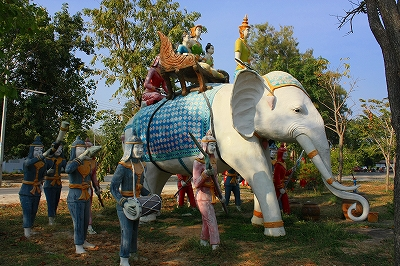
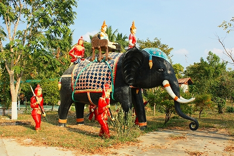
入り口からして黒白のコンクリ象さん御一行がお出迎え。この時点で期待は高まるばかり。
そしていきなりこのコンクリ像である。
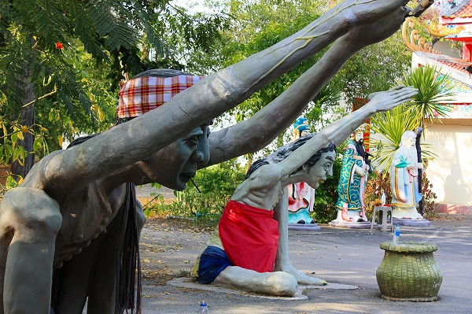
何だ？このカップル？
立膝で座り、両手を高く掲げ、合掌するでもなく何かを掴もうとしているのでもなく…
しかも指とか取れかかってるし。
手前に籠（勿論コレもコンクリです）が置いてあるところをみると、ひょっとして
物乞いのコンクリ像なのか？
小銭の投入口もあるし。
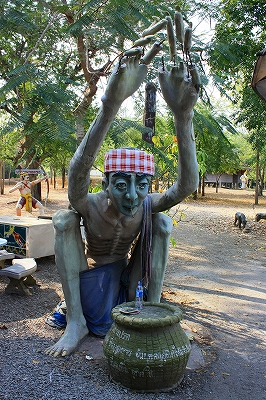 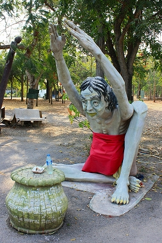
近づいてみると…
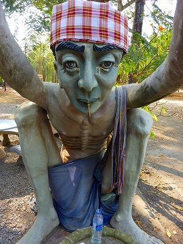 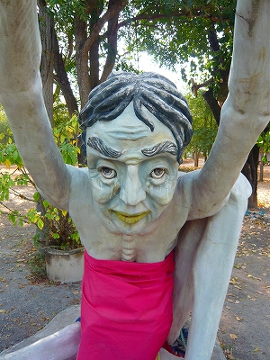
く怖っ！
男の方はタバコをくわえている。
両者ともやせ細っていて肋骨が浮いている。そして
目やにがひどいぞ。
近づくだけで
変なまじないをかけられそうなイヤ～な感じを見事に表現している。
境内には本堂や小さなお堂が点在しており、その前には広場があり鶏や犬がうろうろしている。
その広場にも曲者が点在していて油断ならない。
木の上に立つ老人を弓で射ようとしている人。
何かの寓話なのだろう。犬に追われた老人は筒のようなものを差し出している。
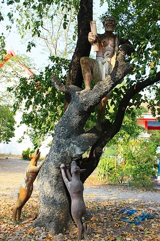 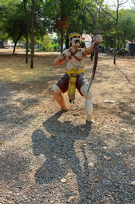
ココで注目なのは老人が立ってる木。コレは
コンクリで作ったいわゆる擬木なのだが、すぐ後ろの木はホンモノ。
つまり
ホンモノとコンクリの木が絡み合っているのだ。木肌も微妙に似せていてかなり
レベルの高い仕上がり。
ただしホンモノの方の木が伸びたらどうするんだろう？
スナイパー目線で見てみました。
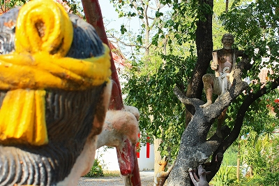
こちらはみんなで昼寝の図。
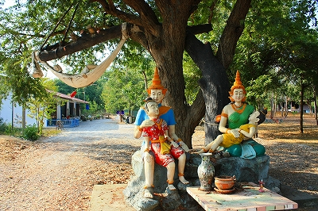
しかし真の主役は木の上で昼寝している老人に相違あるまい。
だって老人はもとよりハンモックから樹上の鳥までわざわざコンクリで作ってあるのだ！
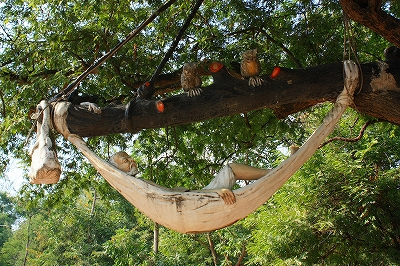
って、良く見たら
木もコンクリで出来てるじゃないか！
あまりにもリアルなのでホンモノと見分けがつかなかったが、ここもホンモノとコンクリの木が絡み合っている。
さすがにこの形状では構造的に無理があるようでワイヤー補強してあるあたりはご愛嬌だが。
むむむ。それにしても
恐るべき彫塑技術である。
人生相談か？
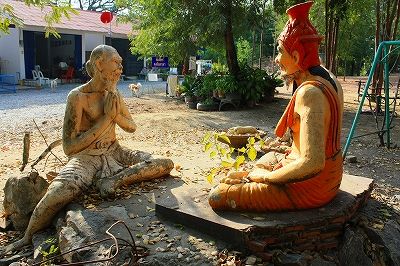
人買いか？
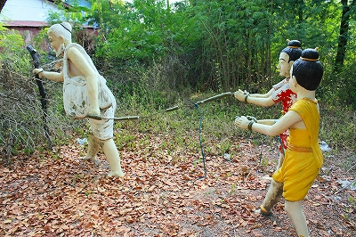
で、何故か遊具も充実。
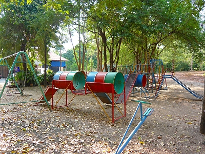
広場の奥の方に仏塔があり、その足元に
謎の地下への入り口があった。
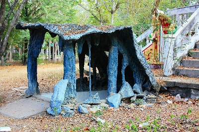
恐る恐る階段を下りてみると…
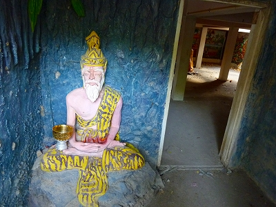
がらんとした地下室の中央には入滅する釈迦の像がぽつんと置かれていた。かなり寂し目。
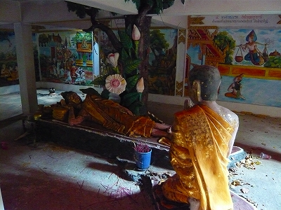
そういえば地獄はどこだろう？
広場にはそれらしきモノは見当たらないし、本堂の方でもなさそうだし…
と思い、目を凝らしてみると…
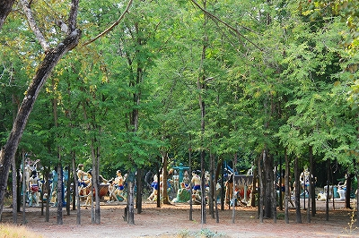
おおお、木立の向こうでやってます、やってます！
ドキッ！丸ごと血まみれ！オッサンだらけの責め苦大会！
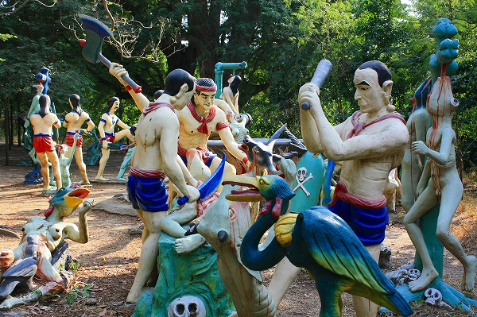
もう手加減ナシで激しくボコりまくりである。
ハイキック地獄
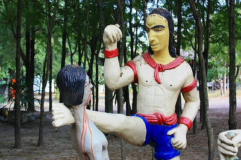
ここの地獄の特色その1；獄卒のみなさんが
極めて事務的に処理している。その無表情っぷりが逆に怖い。
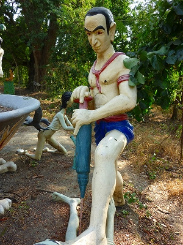 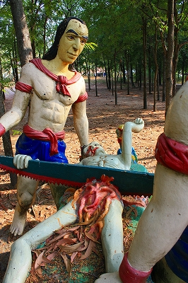
鉄腕アトムっぽい髪型の鬼さんも淡々と職務を遂行しているような。
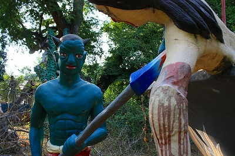
ただしやられる方は溜まったものではない。
赤ちゃんにおっぱい食いちぎられ地獄。育児放棄した母が行く地獄なのか？
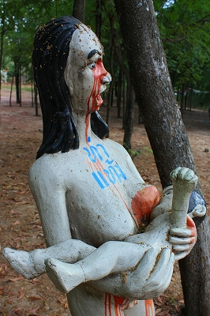
ちょっとダンディーな
首なし君。きっと生前は腹踊りばかりしていたに違いない。
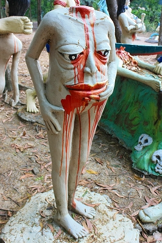
これじゃあトイレに行けないじゃないか！…あ、下半身ないからイイのか別に…
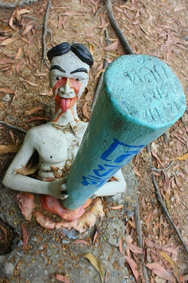
ここの地獄の特色その2；吊るしモノが多い
骨を利用した緑色の人間掛けを使う事で省スペース！これなら狭い部屋でもたくさん収納出来て便利！今ならハンガーもお付けして何と9980円！
…的な
ハンギング地獄。きっと生前に服を片付けなかったのであろう。あああ、恐ろしい恐ろしい、今すぐ
日本直販に電話しなきゃ。
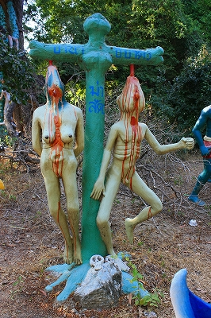 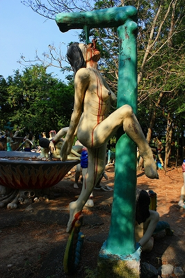
地獄の隅のほうでは閻魔王庁でのお裁きが下っている。
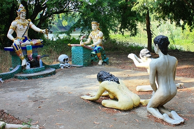
必死（ってもう死んでるんですけど）な表情の人間に対して、閻魔サマの方は異様にリラックスした表情。
「まあまあそんな緊張しないで、ストレッチでもしよっか？」といった半笑い風情。
「ん～迷っちゃうなあ～、じゃあ大サービスで
叫喚地獄！おまけだよ」とか言ってそう…
| 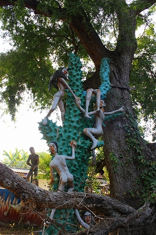 |
|
勿論、タイ地獄不動のレギュラーメンバー、トゲトゲの木も。
|
| 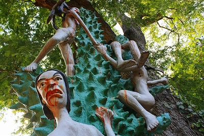 |
ここでもホンモノの木に寄りかかるようにしてコンクリ製のトゲトゲの木が立っている。
ここの地獄の特色その3；舌プレイだ～い好き！
舌への責め苦に異常に執着している。
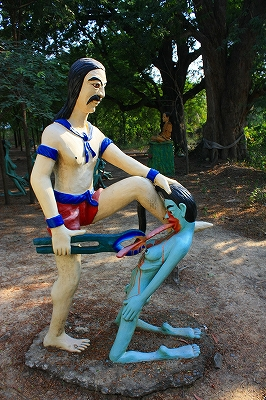 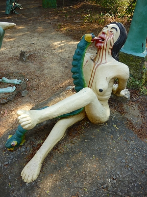
舌フェチとしか思えない責め苦の連続。
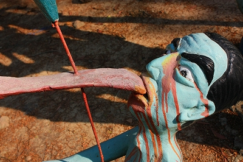
とどめは吊るしモノで舌プレイ。舌をビローンと延ばして縛り付けてありますもん。
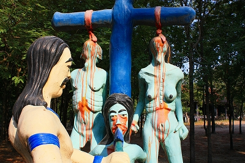
こちらの方は目玉ビローン状態。
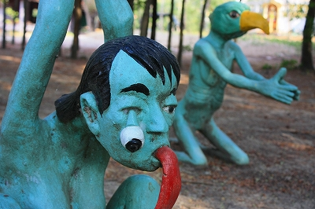
地獄鍋、今日のメニューは最近流行のトマトスープ鍋、ですか？
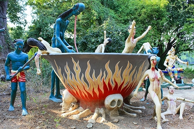
味見に特化した舌をお持ちのようで。
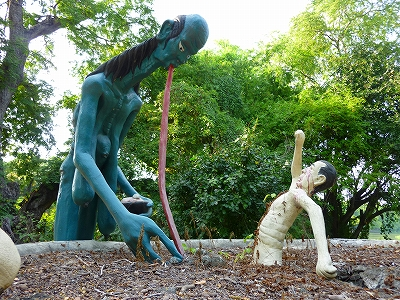
地獄鍋その2。
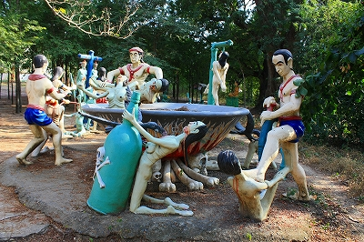
地獄から脱走しようとする亡者を阻止する獄卒のみなさん（勿論無表情）。
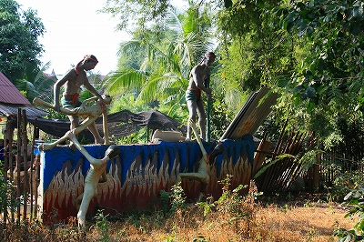
ちなみにこの壁の向こうはリアルにお寺の敷地外で、この塀のすぐ向こうでは
労働者の皆さんが昼間から酒盛りをしていた。
酒ばっか呑んでると↓こんな風になっちゃいますよ。
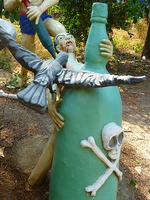
規模はあまり大きくなかったが
個性的な立体地獄であった。満足、満足。
あまりにも素敵過ぎる地獄の光景に動物たちは呆れ顔。
「何だか大変ですね、人間って。あーあ、
生まれ変わっても人間にだけはなりたくないねー。
やっぱ畜生界が一番だわ。畜生サイコー！」
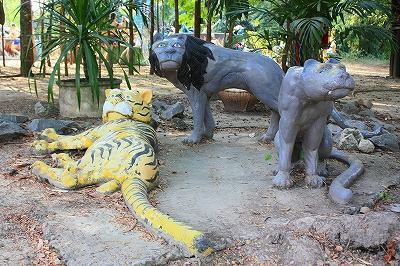
…と言っているみたい。
本堂の裏手にはプチ動物園があった。
一番強烈なのは無数の亀が密集しているトコ。
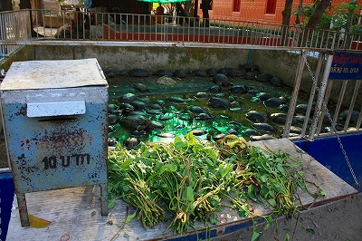
10バーツで草の束を買い、亀の群れに投げつけると、亀同士が草を取り合う
もうひとつの地獄を見ることが出来ます。
サルがバナナを食べてた。柵のすぐ外には鶏がウロウロ。
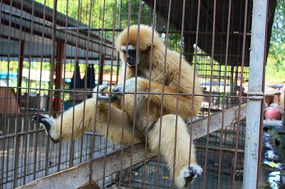
先ほどの遊具といい、家族連れで楽しめる寺を目指しているのだろうか。だったら地獄は逆効果なのでは。
お寺の裏は川になっている。お寺で川といえばもちろん餌撒きスポット。
功徳とはいうものの、実際には
壮絶なお魚バトル煽り行為でしかない。
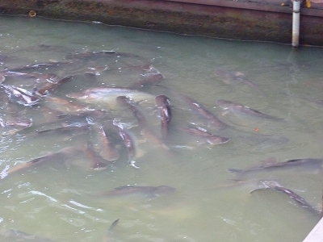
でもこのナマズを苛めると…
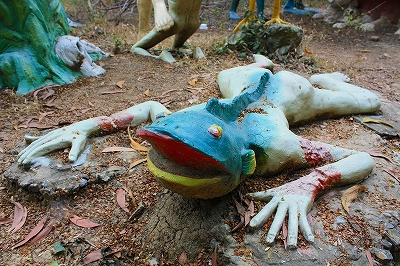
↑こうなっちゃうので要注意ですぞ！